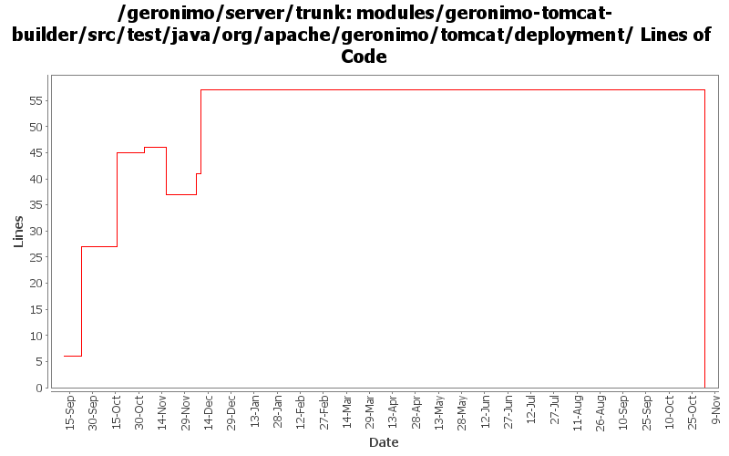

[root]/modules/geronimo-tomcat-builder/src/test/java/org/apache/geronimo/tomcat/deployment

| Author | Changes | Lines of Code | Lines per Change |
|---|---|---|---|
| Totals | 20 (100.0%) | 107 (100.0%) | 5.3 |
| djencks | 10 (50.0%) | 53 (49.5%) | 5.3 |
| kevan | 4 (20.0%) | 44 (41.1%) | 11.0 |
| jlaskowski | 1 (5.0%) | 6 (5.6%) | 6.0 |
| pmcmahan | 1 (5.0%) | 4 (3.7%) | 4.0 |
| prasad | 4 (20.0%) | 0 (0.0%) | 0.0 |
GERONIMO-3565. Modules distributed amongst framework/modules and plugins
0 lines of code changed in 4 files:
GERONIMO-2641 Add license headers to files. Thanks Jarek!
16 lines of code changed in 1 file:
GERONIMO-2628 - upgrade to tomcat 6.0.2 beta
changes:
* modules/geronimo-tomcat
** add repository http://people.apache.org/~pmcmahan/maven2/ to pom
*** this will be removed when tomcat publishes v6 artifacts
** update pom to use tomcat 6.0.2 beta jars
** remove outdated clustering (o.a.g.tomcat.cluster)
** update resources in src/main/resources/META-INF/geronimo-tomcat/var/catalina
** update dependencies in src/main/resources/META-INF/geronimo-dependency.xml
** update test cases
** disabled a test case that fails intermittently
* modules/geronimo-tomcat-builder
** remove outdated references to clustering support
** update test cases
* configs/tomcat
** add repository http://people.apache.org/~pmcmahan/maven2/ to pom
*** this will be removed when tomcat publishes v6 artifacts
* configs/webconsole-tomcat
** remove dependencies on jasper-runtime from pom.xml and plan.xml
* configs/jee5-specs
** use servlet 2.5, jsp 2.1, el 1.0, annotation 1.0
* configs/tomcat-deployer
** update pom.xml to use new web25-builder
* assemblies/geronimo-tomcat-j2ee
** rename to geronimo-tomcat-jee
* test cases
** add new unit test for servlet 2.5 to geronimo-tomcat
* remove unnecessary reference to jasper-runtime from poms using jspc-maven-plugin
** console
** demo
** ca-helper
** jsp-examples
** ldap-demo
** remote-deploy
** uddi-server
** welcome
** magic GBall
4 lines of code changed in 1 file:
GERONIMO-2597 make web service builder optional and allow multiple builders
11 lines of code changed in 1 file:
GERONIMO-2537 Update the src headers in server/trunk/modules to be compliant with the new ASF src header and copyright policy (http://www.apache.org/legal/src-headers.html). I also did some cleanup of the src headers and tried to make them all a consistent format
28 lines of code changed in 3 files:
Partial fix for GERONIMO-2537 All Geronimo source files must be brought in line with the new ASF source header and copyright notice policy
The modules directory is supposed to be migrated. There're some issues with some files, but they'll be handled manually
6 lines of code changed in 1 file:
GERONIMO-2492 first steps, make the WebServiceBuilder a little more flexible
19 lines of code changed in 2 files:
GERONIMO-2427. Make ref builders accept either j2ee 1.4 or jee5 deployment descriptor xml
23 lines of code changed in 3 files:
GERONIMO-2383 Refactor naming builder to a set of registered builders
0 lines of code changed in 4 files: